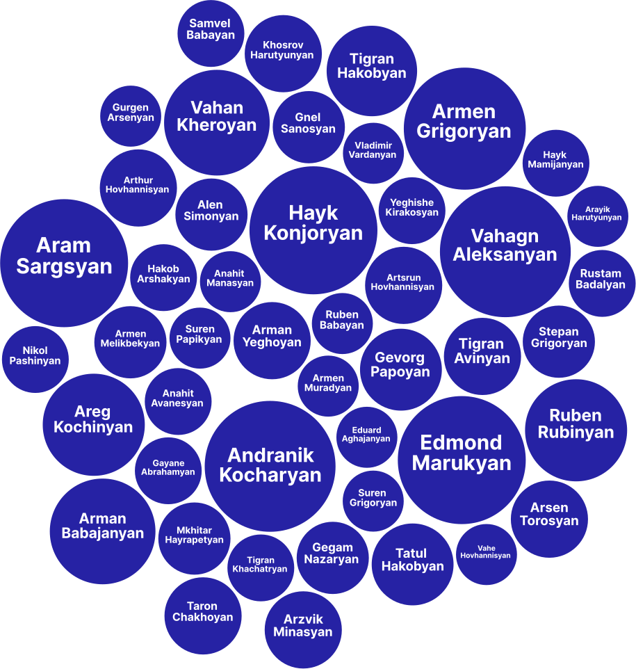

Who’s Petros Ghazaryan’s Favorite Guest?
Statistical Breakdown
Statistical Breakdown
Armenia’s most famous and most-watched interviewer! You’ve probably seen him on Public TV, holding court with ministers, political experts, and the occasional official who often try to escape his sharp questions. His program airs almost every night around 10 PM, a prime spot for late-night political discussions.
From June 20, 2021, to July 3, 2025, Petros Ghazaryan conducted 0 interviews.

This is a spoiler about the most frequent guests on Petros Ghazaryan’s show! If the size of each bubble represents how often they've appeared, what do you think — how many times have Vahagn Aleksanyan and Andranik Kocharyan been featured on the show? Scroll down to see the numbers!
Armenia’s most famous and most-watched interviewer! You’ve probably seen him on Public TV, holding court with ministers, political experts, and the occasional official who often try to escape his sharp questions. His program airs almost every night around 10 PM, a prime spot for late-night political discussions.